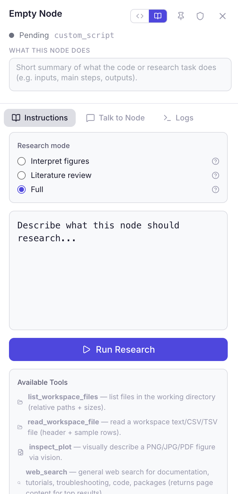
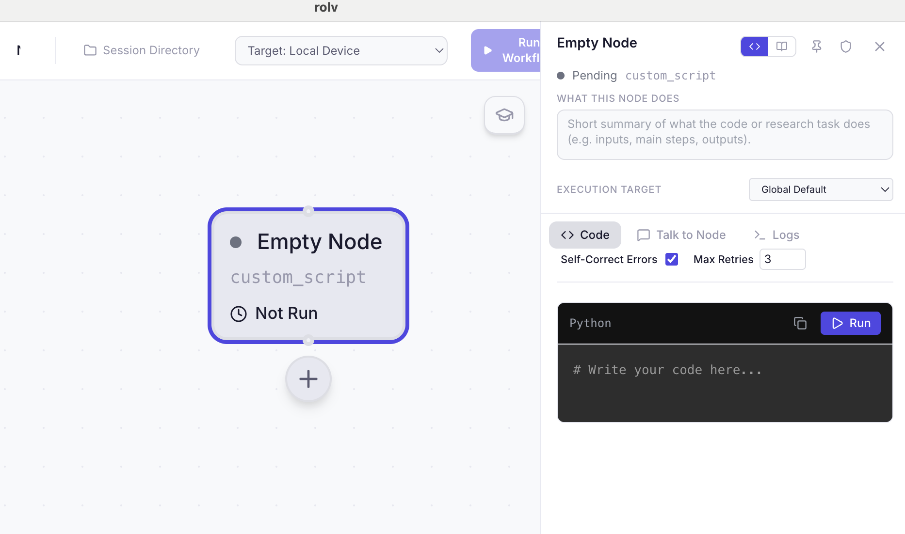

Graph View
The Graph View lets you build, inspect, and execute directed acyclic graph (DAG) pipelines. Each node is a processing step — write code, run research, or manage data inputs/outputs.
Creating a Graph
There are two ways to create a graph:
- From the sidebar — Click the Graph button to create a new empty graph
- From a chat — Click "Step into Graph →" in the chat header. If the session has no graph yet and scripts have been run, Rolv shows a review card in the chat first: approve the scripts to keep, change the selection by typing, or open an empty canvas. Approving builds the workflow and leaves you in the chat; click the button again to open the canvas. You can ask in chat to make a workflow from the analysis and get the same card. If the chat has no scripts, Rolv builds a pipeline from the conversation and opens the canvas. If a graph already exists, the button only switches to Graph View.
Chat and Graph
When this session still has a conversation, the graph header shows ← Back to Chat. That returns to Chat View without tearing down the pipeline.
Rolv remembers whether you last left the session in Chat or Graph. Clicking it in the sidebar restores that view. Graph-only sessions (sidebar Graph, never used chat) stay in Graph View and hide Back to Chat.
The Canvas
The graph canvas is an interactive workspace powered by ReactFlow:
- Click on empty space — Opens the node creation dialog
- Click a node — Opens the Node Inspector panel on the right
- Drag nodes — Rearrange the layout
- Connect nodes — Drag from one node's handle to another to create edges
- Zoom/Pan — Use scroll wheel and drag
Node Types
Compute Nodes (💻)
Execute Python, R, or Bash. These are the workhorse nodes of your pipeline. Use them whenever you need a repeatable loop — for example “search PubMed for every gene in this list” or “score every row in a table.” The script writes files to your working directory (the project folder on disk). Later nodes open those files by name.
Research Nodes (📖)
A research node is an AI assistant that reads, searches, and writes a report — it does not run Python or R. Think of it as a careful reader, not a calculator.
Use a research node when a person would need judgment: “Does this abstract support MYCN as a neuroblastoma target?” or “Summarize what this plot is showing.” Do not use it as a bulk downloader for 20 genes. For that, put the loop in a compute node, then connect a research node that interprets the file.

Click the research node and open the Instructions tab. You will see three research modes (radio buttons) and, below them, an optional Structured output checkbox.
Research modes
| Mode | What the node can do | When to pick it |
|---|---|---|
| Interpret / simple agent | Read files and plots in your project folder. No PubMed, GEO, or web search. | You already have results (a table, a figure, a JSON file) and want the AI to explain them. |
| Literature review | Search papers and the web (PubMed, GEO, patents, clinical trials, …). Cannot open your local files. | You only need published literature, not your own tables. |
| Full (default) | Files and search. | The task needs both: e.g. read a gene list, then look up papers. |
The mode only changes which tools the assistant is allowed to use. It does not change how many times it may search (see structured output below).
How a research node “sees” the previous node
Drawing an arrow into a research node does not plug the previous file in like a USB cable. The arrow means two simpler things:
- Run order — parents run first.
- A briefing — Rolv pastes a text summary into the research prompt: the parent’s name, snippets of logs, and paths of files that parent listed as results. On a full workflow run that briefing is shortened (about 4,000 characters per parent).
If the parent wrote a file such as scores.tsv, the research node still has to open it with its file-reading tool. Name the file in the Instructions (“Read scores.tsv and judge each row”) so it does not have to guess.
Structured output (JSON for the next node)
Tick Structured output when a later compute node must read the answer as data — a table of genes and scores — not as a long essay.
You can provide field names (comma-separated, e.g. gene, evidence_level, rationale, pmids), or leave the field list blank to let Rolv automatically infer a suitable 3–5 column schema from your instructions and chosen research mode.
Batch iteration across items (ForEach)
For large datasets (e.g. top 20 or 50 differentially expressed genes), tick Batch iteration across items (ForEach):
- Parallel Worker Pool: Runs research queries over each row/item concurrently (up to 100 items) with live progress logging (
[1/10] Gene: TP53...). - Flexible Data Extraction: Reads items directly from CSV, TSV, JSON arrays, or plain text lines from upstream files (e.g.
deseq2_results.csv). - Unified Artifacts: Automatically compiles individual findings into both a structured JSON dataset (
<slug>-results.json) and an aggregated Markdown report (<slug>-report.md). - Optional Strict Fact-Checking: Verifies all assembled row entries against raw tool context before writing final reports.
Reading your files
By default the file tool only peeks: the first ~20 rows of a spreadsheet, or ~100 lines of a text file. The result is labelled complete or truncated so the assistant knows whether it saw everything. For a whole table, structured-output mode is told to request a fuller read (up to 2,000 lines). Huge files are still capped so the AI is not flooded.
Output tab vs files on disk
The Output tab is the report you read in the app. After a successful research run, the same markdown is always written to the working directory as {label}_report.md (from the node title) and registered in output.json, so a later node can open it by name. A node called “Literature review” produces literature_review_report.md.
With Structured output, you also get {label}_node_output.json (the table) and {label}_node_output.md (the same table as a grid). Downstream compute should load the JSON.
A long prose report can still stop mid-table if the writer spends its whole answer on the first gene. Structured output and ForEach batch iteration avoid that by forcing a row-per-item JSON table instead of an essay.
Data Input Node
Optional. Define input variables and file paths for your pipeline. Saved as input.json in the working directory. Features:
- Add variables — Key-value pairs (e.g.,
INPUT_FILE → /path/to/data.csv) - Descriptions — Optional notes for each variable
- Smart Validate — Automatically checks if tabular files (CSV/TSV) are valid
- Test data — A script in R, Python, or Bash that creates small sample files in the session folder. Recipes do not ship those files. See Test data below.
A graph can have at most one Data Input and one Data Output (fixed ids). New graphs start empty — add them from the canvas prompt when you need them. Workflows built from chat add a Data Output node if one is missing. Select a node and press Delete or Backspace to remove it.
When you Save as Recipe, names, descriptions, and default values are stored. A local file path is cleared so the recipe stays shareable. Running the recipe writes those keys into input.json.
Test data
Open the Data Input node and expand Test data. Choose R, Python, or Bash.
Click Starter. Rolv looks at each input’s name and description, and at the scripts that read those inputs, then fills the editor. Above each sample file, a comment says what that file should contain and asks you to replace the placeholder. The script ends by writing test_input.json, for example:
{
"INPUT_FILE": "mock_input.csv",
"ID_COLUMN": "gene"
}
The names in that file are the same names as on the Data Input card. File values are the sample files the script just created. Other values, such as a column name or a number, are written there too.
Edit the placeholders so the files match what the pipeline reads. Then click Generate Data. Rolv runs the script, copies test_input.json onto the input fields, and saves input.json. Pipeline steps read input.json. They do not read test_input.json.
Generate & Run does the same copy and then runs the workflow. The canvas Run menu has Run with Test Data, which does this in one step.
You need to be signed in for Starter, so it can read the pipeline. If the editor is empty and Starter cannot reach the model, Rolv inserts a short outline you can edit. If a script is already there, Rolv asks before replacing it, and leaves it in place when Starter fails.
Data Output Node
Optional. Tracks output artifacts produced by the pipeline. Reads from output.json in the working directory. After a compute node succeeds, new workspace files are captioned and appended to that ledger (Graph Run, chat workflow runs, and inspector play). Research reports are registered the same way. The panel shows file names, descriptions, which node produced them, and timestamps. Not executed as code.
What the arrows between nodes mean
An arrow from A → B means “B runs after A, and B may be told about A.” It does not automatically pass A’s spreadsheet into B.
Compute nodes share one project folder. Node A must write a file (for example hits.tsv). Node B’s script must open that same name. If B never mentions hits.tsv, the arrow does nothing for B’s data. The Data Input node’s variables go into input.json (usually INPUT_FILE); that is the one automatic path.
Research nodes receive a text briefing from connected parents (names, log snippets, file paths), then may open those files themselves. See Research Nodes above.
If two nodes should share data, give the file a clear name in the compute script and mention that name in the next node’s instructions or code.
Adding Nodes

Click on empty canvas space to open the node creation prompt. You can:
- Type a description — AI generates the node (code, label, description) automatically
- Leave blank — Creates an empty node for manual coding
- Choose node type — Select Compute, Research, Data Input, or Data Output
If you click the ➕ button on an existing node, the new node is automatically connected downstream.
Node Inspector

Click any node to open the inspector panel on the right side. It includes:
Header
- Node title — Click to rename
- Compute/Research toggle — Switch between code execution and AI research (hidden on Data Input/Output)
- Pin button — Pinned nodes skip staleness checks
- Shield (touch-last / protected) — When auto-correct heals a failing pipeline, it prefers editing other nodes first and only touches a touch-last node as a last resort. Optional reason is sent to the model when editing.
- Status indicator — Pending, Running, Success, Failed, Correcting, or Stale
Description
A brief summary of what the node does. Useful for understanding the pipeline at a glance.
Execution Target
For compute nodes, choose where code runs:
- Global Default — Uses the global setting (usually local)
- Local Device — Run on your machine
- SSH: [Server Name] — Run on a configured remote server (see Settings)
Tabs
| Tab | Available For | What it shows |
|---|---|---|
| Code | Compute | Code editor with R / Python / bash highlighting, line numbers, and find (Cmd/Ctrl-F). Expand opens a full-window overlay. The sun/moon control on the editor is separate from the app theme. |
| Instructions | Research | Editable prompt for what to research |
| Talk to Node | Both | Chat with the AI about this specific node |
| Logs | Both | Execution output (stdout/stderr) |
| Results | Compute | Output files produced by the node |
| Output | Research | Rendered markdown research results |
Pending Code Changes
When you chat with a node and the AI proposes code changes, they appear as a pending change — you must explicitly Apply or Discard before the node updates.
Running the Pipeline
Run All / Run with Test Data
Click ▶ Run Workflow to execute the entire pipeline. The Run button includes a dropdown arrow with two options:
- Run Workflow — Executes all nodes in topological order (dependencies first). Data Input and Data Output are skipped (bindings still write
input.json). - Run with Test Data — Runs the test-data script, copies
test_input.jsononto the Data Input fields, writesinput.json, and then runs the workflow. The Data Input node needs a test script first. Use Starter on that node to create one.
While a run is in progress, the button becomes Stop — clicking it terminates the current execution process.
Smart Skip
Nodes that already succeeded and aren't stale are automatically skipped during a full run — saving time on re-execution.
Staleness
A node becomes stale when any of its upstream parents have been re-executed after it. Stale nodes show a warning indicator and will re-run during the next workflow execution.
Tip: Pin a node to exempt it from staleness checks — useful for expensive computations you don't want to re-run.
Self-Correction (Auto-Correct)
When enabled, if a node fails during execution:
- The error is sent to the AI agent
- The AI proposes a fix to the code
- The fixed code is automatically executed
- Up to 3 retry attempts by default (per-node Max retries in the inspector)
Each correction is logged in the node's Error Log with the error, fix description, and code before/after.
When running workflows from chat, the orchestrator also performs Autonomous Workflow Recovery: the agent inspects the node logs, fixes script code or input bindings, and automatically re-executes the failed step within a bounded recovery budget (up to 2 retries) before finalizing its response.
Graph Actions & Settings
Click the Slider Icon (⚙️) in the graph header to open Graph Actions:

- Graph Statistics: Real-time count of total nodes and active connections.
- Strict Fact-Checking: Adds a secondary LLM pass during code generation to eliminate hallucinations.
- Auto-Correct Failures: Toggle automatic AI self-healing retries for failing nodes.
- Session AI Directives: Session-specific instructions (e.g., "Use ggplot2 with theme_minimal for all plots"), appended to global instructions.
Workflow Actions & Export Options

From the bottom of Graph Actions, export or convert your workflow:
- Build Report: Collate all node outputs into a structured executive report using LLM reasoning.
- Create Code Repo: Extract all compute scripts into a standalone code folder.
- Write
rolv_manifest.json: Export execution lineage, node contracts, and parameters into the session working directory. - Dump Recipe Snapshot: Export a full logic snapshot for complete reproducibility.
- Export to JSON: Download the raw graph DAG configuration file.
- Save as Recipe: Convert the live graph into a reusable Recipe bundle. Data Input/Output stay I/O nodes (not fake compute). Env files (
python-requirements.txt,r-packages.txt,system-tools.txt) are filled with versions where known; Python stdlib and R base packages are skipped. This is the recommended first step before editing in Recipe Designer. Recipes exported before this round-trip still need a fresh Save as Recipe to restore purple/green I/O nodes.
Ask a Human Expert
Click the 🎓 graduation cap button to submit a question to a human expert. You can optionally attach your conversation as context. This is an experimental service we are testing, delays could occur.
Next: Recipes →